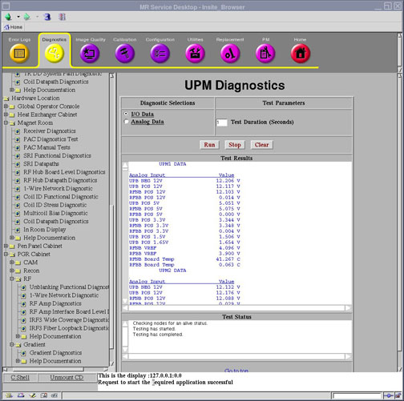

Operating Documentation
Direction 5670006, Rev# 1
Discovery MR750w GEM Service Methods
Module Version 3.0, Version Date 8/19/08
Operating Documentation |
Diagnostics >> System Function >> RF >> UPM Diagnostics
Diagnostics >> Hardware Location >> PGR Cabinet >> CAM >> UPM Diagnostics
Illustration 1: Analog Data - UPM Diagnostics

The UPM Diagnostic reads the power supply information from the UPM board.
UPB Negative 12 Volt
UPB Positive 12 Volt
RFNB Positive 12 Volt
RFBB Positive 12 Volt
UPB Positive 5 Volt
RFNP Positive 5 Volt
RFBB Positive 5 Volt
UPB Positive 3.3 Volt
RFNP Positive 3.3 Volt
RFBB Positive 3.3 Volt
UPB Positive 1.5 Volt
UPB Positive 1.65 Volt
RFNP VREF
RFBB VREF
RFNP Board Temperature
RFBB Board Temperature
No special requirements.
Select Analog Data from the UPM Diagnostics screen.
Modify Test Parameters as necessary.
Click the [Run] button.
The Analog Data test reads the power supply information from the UPM board every 5 seconds for the specified test duration (max 300 secs). No error messages will be logged for failing power supplies since the applications code will be logging these errors automatically.
A blue color indicates a normal result.